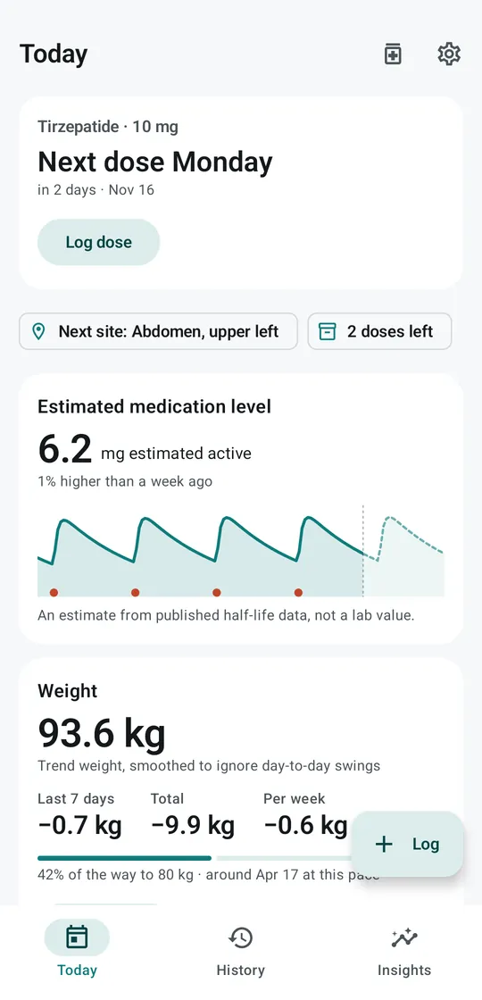
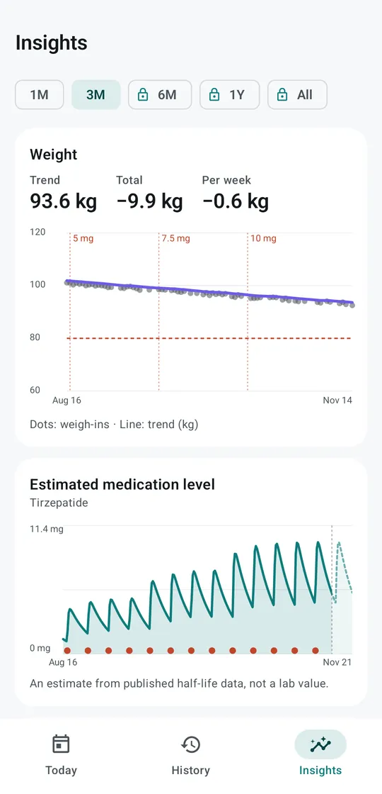
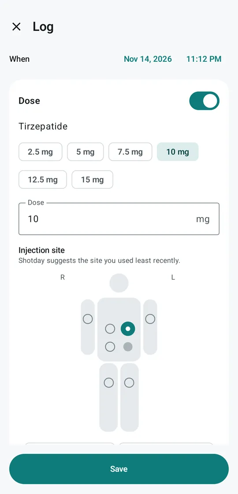
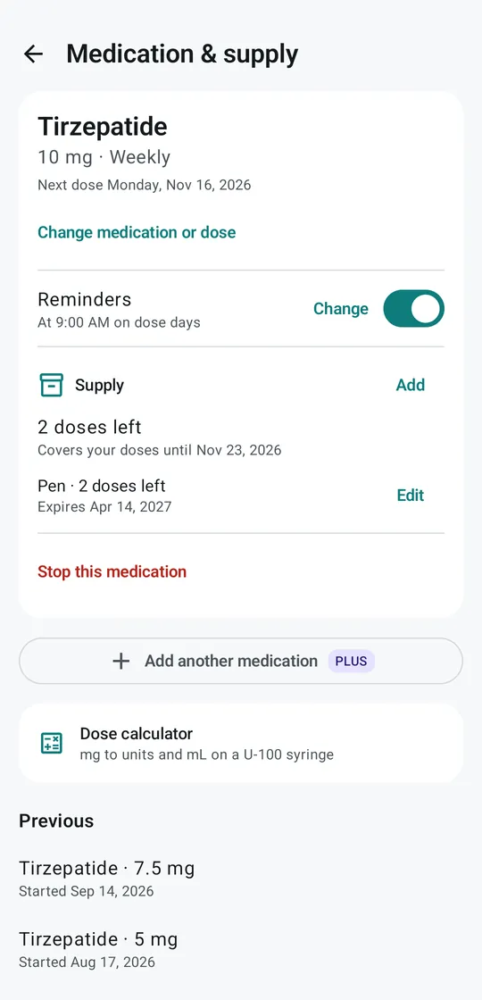

Never guess your shot day
A countdown to your next dose, a reminder on the day and, if you like, the evening before. Logging a dose takes a couple of taps.
Shotday reminds you when your next dose is due, suggests where to inject, estimates how much medication is active, and shows what your weight is really doing, without the day-to-day noise. No account. Your health log stays on your phone.


Built for semaglutide, tirzepatide and other GLP-1 medications, including pens, vials and daily tablets.
A countdown to your next dose, a reminder on the day and, if you like, the evening before. Logging a dose takes a couple of taps.
A body map shows where you injected recently and suggests the site you have used least.
A curve of how much medication is likely active, based on published half-life data, with a 7-day projection. An estimate, not a lab value.
A smoothed trend that ignores daily swings, weekly rate, total change and progress to your goal, in kg, lb or stone.
Supply goes down with every logged dose, with a reminder before you run out. Side effects and food noise take seconds to note.
A PDF summary of doses, weight and side effects, made on your phone, to share at your next appointment. Plus full backup and export.


The free version shows a few ads, never on logging screens. Shotday Plus is optional and removes them.
Everything for day-to-day tracking.
For people who want the deeper picture.
Monthly, yearly or a one-time lifetime purchase, billed by Google Play in your currency. The app shows the exact price and any trial end date before you pay. Cancel any time in Google Play.
Shotday has no account and no server of its own. Read the privacy policy for every detail.
Doses, weight, side effects and notes are stored on your phone. We never receive them.
No health data goes to analytics or to ads. Plus members' phones don't request ads at all.
Usage statistics and crash reports are optional and can be switched off in Settings at any time.
Work out how many units to draw on a U-100 syringe for a dose in mg. The same calculator is built into the app.
Draw up to
25units
For U-100 syringes, where 100 units = 1 mL. This is arithmetic, not dosing advice: always follow the instructions from your prescriber or pharmacy, and double-check every dose before you inject.
No. Shotday is a personal log. It is not a medical device and it does not diagnose, treat or recommend doses. The medication level is an estimate from published half-life data, not a lab value. Always follow your prescriber's instructions.
Weekly and daily GLP-1 medications: semaglutide (injections and tablets), tirzepatide, liraglutide, dulaglutide and orforglipron, as brand-name or compounded products. You can also add any other medication with your own schedule.
On your phone. There is no Shotday account and no Shotday server. Your log leaves the phone only if you export or share it yourself, or through Android's own encrypted backup to your Google account, which you control in Android settings.
Yes. Logging, reminders, charts and the calculator all work without a connection. The internet is used only for ads in the free version, purchases, and the optional usage statistics and crash reports.
Plus is available monthly, yearly or as a one-time lifetime purchase. Google Play shows the exact price in your currency before you pay. Subscriptions can be cancelled any time in Google Play under Payments & subscriptions, and you keep Plus until the end of the paid period.
English, German and French, with kg, lb or stone, and 12- or 24-hour time.
Shotday is in testing and coming to Google Play soon. This page will link to it as soon as it is available.
Medical disclaimer. Shotday is for personal record-keeping only and does not replace professional medical advice. Talk to your healthcare provider about your treatment. In an emergency, call your local emergency number. Medication names are trademarks of their respective owners; Shotday is not affiliated with or endorsed by any drug manufacturer.